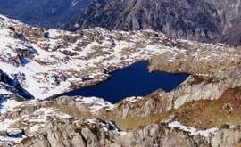

lac du Brévent (2127 m)

Départ : parc Merlet (1480 m)
Aller : 3,75 km, + 810 m, 153 min
Retour : 3,75 km, - 153 m, 106 min
Difficulté : E
Période : mi juillet - septembre
Remarque : -
Bibliographie : Sentiers du Mt Blanc (itinéraires 324, 135), topos TMB, TPMB, GR5.
Suivre le GR 5 / TMB qui monte le long des clôtures du parc animalier et traverse le torrent de Lapaz puis celui des Vouillourds (passages câblés). Il passe devant le refuge de Bel Lachat, monte à la tête de Bel Lachat. 500 m après, prendre à G une sente balisée en jaune qui descend au lac.
Retour même itinéraire, ou, plus long, par l’Aiguillette des Houches et les chalets de Chailloux (lire AsF© page 133).
Photo Guy Mounier